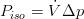
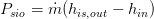

v1.3.0
Created Montag 26 Oktober 2015
This version was released March 2018.
Overview
New Features
General
- FluidDissipation is omitted. All applications of the library are transferred directly to the replaceable models. This is advantageous w.r.t. CPU time and robustness. See +FluidDissipation for the models affected by the change.
- New fuel connectors which are less error prone and more flexible. See +New Fuel Connectors for the models affected by this improvement. Change is fully backwards compatible, as old models from ClaRa_Obsolete are used for power plant models built with ClaRa 1.2.2 or lower. See +New Fuel Connectors for description of manual conversion.
- ClaRa.Components.Furnace have now optional pressure loss models.
- New Examples which are more declarative, better represent the power of ClaRa and are relevant transient scenarios
Components
- Improved numerical behaviour of all NTU models, including heat exchangers
- Major pump revision
New Models
- ClaRa.Components.MechanicalSeparation.Bottle_L3 a start up bottle for once through boilers
- ClaRa.Basics.ControlVolumes.FluidVolumes.VolumeVLE_L4 was improved to account optionally for (slight) mechanical non-eqilibrium of liquid and gas phase
- Fuel Sensors and fuel splits
- Static Cycle Dispatcher for calculation of required fuel mass flow rate
Bugfixes
- corrected logarithmic mean temperature difference in furnace package,
→ can lead to lowered heat flow by approx. 5 %, see +BugfixLogMeanT for a list of the affected models
- Corrected bug in LHV_dry calculation of ClaRa.Components.Mills.HardCoalMills.VerticalMill_L3
→ Transient results of mill models changes
Detailed Release Notes
General
- necessary c-lib for ClaRa delay function is now placed in resources folder → the update.bat for the ClaRa delay function is no longer needed
- save Components.Control.PredictorModel3508.Icons.mo as directories
- move Components/Utilities/Blocks/Check/dslin.mat to Resources/TableBase and renamed it to "exampleTable.mat"
Examples
added more representative examples
- SteamCycle_01
- SteamCycle_02
Basics
Geometry
- add overall heat transfer area to geometry for discretizeable objects
VLE Volumes
- bugfixed smoothed logarithmic mean calculation in L2 heat transfer models in case of negative lower and upper temperature difference, results may change
PressureLosses
- start value for pressure drop in pressure Models L2/L3 of zero given
- initial system of equation is fully defined for L2/L3 models initialising at steady state
Gas Volumes
- bugfixed smoothed logarithmic mean calculation in L2 heat transfer models in case of negative lower and upper temperature difference, results may change
- updated inlet summary of L4 Volume and L2 Volume
Solid Volumes
- renamed wall components for better understanding of usage
→ rename ThinWall_L4 to CylindricalWall_L4 and ThickWall_L4 to CylindricalWall_L4
→ replaced ThinWall_L2 by discretisable ThinWall_L4 and moved to ClaRa_Obsolete
→ replaced ThinWall_L2 by discretisable ThinWall_L4 and moved to ClaRa_Obsolete
Improved numerical behaviour of all NTU models, including heat exchangers
- ClaRa.Basics.ControlVolumes.SolidVolumes.NTU_L3
→ heat capacity averaging is now a replceable model and not an encapsulated function
→ added model for fixed heat capacity
→ removed pseudo state in energy balance
→ improved numerics at low/reverse flow conditions, however model is not suited for reverse flow
→ added model for fixed heat capacity
→ removed pseudo state in energy balance
→ improved numerics at low/reverse flow conditions, however model is not suited for reverse flow
- ClaRa.Basics.ControlVolumes.SolidVolumes.NTU_L3_standalone
→ replaced controller by minimal implementation of PI controller, avoids chattering at zero flow conditions
→ improved initialisation, allows user defined fixed starting value for yps
→ fixed controller output for mass flows close to zero
→ improved initialisation, allows user defined fixed starting value for yps
→ fixed controller output for mass flows close to zero
Interfaces
- removed ClaRa.Basics.Interfaces.fluidPort_XRG and copied its content to ClaRa.Basics.Interfaces.FluidPortOut (omits one level of inheritance)
Components
TurboMachines
Pumps
major revision of the PumpVLE_L1_affinity and its derived model PumpVLE_L2_affinity
- introduced replaceable models for the hydraulic characteristic and the losses/efficiency calculation. This gives more freedom for future development
- bugfixed the hydraulics for Δp < 0 which referrs to the reverse turbine mode. (previously a speed-independent throttling was assumed which is not reported by the literature)
- simplified the equation for V_flow = f(Δp) as there is only one equation for the three operation modes supported. This gives slightly different results for V_flow < 0 and exp_hyd ≠ 0.5 (which is the default)
- bugfixed calculation of the summary's NPSHa
- extended summary by P_iso and P_shaft
- introduced a visualiser encircling the pump red if NPSHa < 0 (i.e. if steam enters the pump)
- corrected values for P_fluid, tau_shaft, P_shaft for the reverse flow and turbine case which gives different results in these cases but which is uncritical since the previous implementation was not reasonable in theses cases (so we assume no user should experience problems due to these changes).
- changed some variable names making the nomenclature more straight forward.
- changed the rotational energy balance to be in terms of torque
- changed the calculation of the isentropic power from  to  which is more precise. Slight changes must be expected.
- added the interface to the simCenter's summary allowing the pump to contribute to the overall power plant efficiency
- updated docu accordingly
- changed default of hydraulic efficiency model exp_rpm from 2 to 0 implying no rpm dependency of the max. efficiency at current speed (priviously we had a very strong dependency)
minor revision of Pump_VLE_L1_simple
- bugfixed calculation of the summary's NPSHa
- introduced a visualiser encircling the pump red if NPSHa < 0 (i.e. if steam enters the pump)
Turbines
- renamed replaceable model's package from EfficiencyModels to TurbineEfficiency
- renamed the turbine's ICom to IComTurbine
Heat Exchangers
- Improved numerical behaviour of NTU heat exchangers, see Solid Volumes for detailed information
- ClaRaPlus.Components.HeatExchangers.HEXvle2vle_L3_2ph_BU_simple adjust connector positions
- ClaRaPlus.Components.HeatExchangers.HEXvle2vle_L3_2ph_BU_ntu
- heat port of liquid zone of shell volume is now connected via mixing component → enhances numerical stability, results may change
- rename levelAbs, levelRel according to convention ClaRa.Components.HeatExchangers.HEXvle2vle_L3_2ph_CH_ntu
- rename levelAbs, levelRel according to convention ClaRa.Components.HeatExchangers.HEXvle2vle_L3_2ph_CH_simple
- rename levelAbs, levelRel according to convention ClaRa.Components.HeatExchangers.HEXvle2vle_L3_2ph_BU_simple
- rename levelAbs, levelRel according to convention ClaRa.Components.HeatExchangers.HEXvle2vle_L3_2ph_CU_ntu
- rename levelAbs, levelRel according to convention ClaRa.Components.HeatExchangers.HEXvle2vle_L3_2ph_CU_simple
- rename levelAbs, levelRel according to convention ClaRa.Components.HeatExchangers.HEXvle_L3_2ph_BU
- ClaRa.Components.HeatExchangers.RegenerativeAirPreheater_L4 and ClaRa.Components.HeatExchangers.RegenerativeAirPreheaterPrimaryAndSecondaryAir_L4 Initialisation improved
- bugfixed images in parameter dialoges
- ClaRaPlus.Basics.ControlVolumes.Fundamentals.Geometry.HollowBlockWithTubesAndCarrierTubes
- ClaRaPlus.Basics.ControlVolumes.Fundamentals.Geometry.HollowBlockWithTubes
- bugfixed ClaRa.Components.HeatExchangers.HEXvle2gas_L3_2ph_BU_simple has now a cylindrical wall
Mills
- ClaRa.Components.Mills.HardCoalMills.RollerBowlMill_L3 improvements:
- updated connectors/fuel definition, see +New Fuel Connectors
- added a parameter difining a residual humidity of the coal at outlet
- Corrected bug in LHV_dry calculation
- ClaRa.Components.Mills.HardCoalMills.RollerBowlMill_L3 renamed a number of variables to make the source code more readable:
- m_flow_air → m_flow_air_in
- M_c → mass_rct
- M_pf → mass_pct
- M_cair → mass_pca
- m_flow_coal_pf → m_flow_coal_pulv
- m_flow_coal_in → m_flow_rct
- m_flow_coal_out → m_flow_wc_out
- W_c_ → m_flow_rc_in
- xi_coal_mix → xi_wc_out
- m_flow_coal_ret → m_flow_pc_ret
- m_flow_H2O_evap → m_flow_evap
- P_grind → P_grind_
VolumesValveFittings
Pipes
- ClaRa.Basics.ControlVolumes.FluidVolumes.VolumeVLE_L4 was improved to account for (slight) mechanical non-eqilibrium of liquid and gas phase. Especially, beginning evaporation in boiler tubes or natural circulation can be modelled with higher accuracy. However, still mixed energy, mass and momentum balance equations are used, thus strong non-equilibrium (e.g. countercurrent flow of phases) is not considered.
- Replaceable model structure for mechanical equilibrium models was introduced
- Energy balance was reformulated to account for in-situ mixture and mixed cup enthalpy
- A simple analytical slip correlation according to Zivi was implemented
Valves
- ClaRa.Components.VolumesValvesFittings.Valves.Fundamentals.Quadratic_FlowFunction can now be parametrised by cross sectional area and outflow number
- ClaRa.Components.VolumesValvesFittings.Valves.ThreeWayValveVLE_L1_simple rearranged energy conservation equation to avoid division by zero
Fittings
- Heat transfer model to the souurrounding wall in spray injectors SprayInjectorVLE_L3 and SprayInjectorVLE_L3_advanced are now replaceable models
- the defaults are chosen such that the model behaviour is backward compatible.
- add species to joins and splits
- new components
- Fuel fixed ratio splitter
Mechanical Separation
- moved ClaRa.Components.MechanicalSeparation.FeedWaterTank_L3 zo ClaRa_Obsolete
- renamed ClaRa.Components.MechanicalSeparation.FeedWaterTank_L3_advanced to ClaRa.Components.MechanicalSeparation.FeedWaterTank_L3
- rename Drum_L3_advanced to Drum_L3 as there is no simple drum (which would be a drum with less inlet/outlet ports according to naming of feedwater tank models)
- added four more connctors for additional risers and downcomers in Drum_L3 (the respective changes will be handled by the convert script)
- default material is set to Orstech insulation in drum and feedwater tank models
- moved input CF_lambda to parameter dialogue tab "Heat Losses"
Electric Components
- bugfixed ClaRa.Components.Electrical.SimpleGenerator by adding outer simCenter, component does check now with default parameters
Furnace
- bugfix of mean temperature calculation, see +BugfixLogMeanT
- add explanative parameter dialogue pictures in geometry context dialogue
- replaceable pressure loss models on Furnace models
- ClaRa.Basics.ControlVolumes.Fundamentals.HeatTransport.Gas_HT.Radiation.Radiation_gas2Wall_L2 added annotation, CF_fouling appears now in parameter dialog
- ClaRa.Basics.ControlVolumes.Fundamentals.HeatTransport.Gas_HT.Radiation.Radiation_gas2Wall_advanced_L2 added annotation, CF_fouling appears now in parameter dialog
Sensors
- ClaRa.Components.Sensors.SensorVLE_L3_T: added optional consideration of surrounding pipe wall
- New Components
- Fuel Mass flow sensor
- Fuel Temperature sensor
Utilities
- bugfixed initisalition of LimPID (backward compatible)
- Initisalisation is converted to Integer based (backward compatible, including the previously buggy initisaliation)
- updated wiring to be more transparent of LimPID
- ClaRa.Components.Utilities.Blocks.LimPID now takes parameter limitsAtInit for checking for valid start values into account
StaticCycle
- renamed ClaRa.StaticCycles.Machines.Pump to Pump1 and ClaRa.StaticCycles.Machines.Pump_real to Pump1_real to be in accordance with new pump models pump2 and pump3.
- renamed ClaRa.StaticCycles.ValvesConnects.FlowAnchor_constPressue1 to ...constPressure1
- removed ClaRa.StaticCycles.ValvesConnects.Tube3 as it is a duplicate of ClaRa.StaticCycles.ValvesConnects.Tube1 (All instances of Tube3 will be converted to Tube1)
- added dispatcher
- added flame room without tube bundles
- FlameRoom4 removed (doubled with FlameRoom3)
- Bugfix of wall temperature calculation in flameRooms
- summaries of StaCy components are now accessible during initialisation
SubSystems
- ClaRa.SubSystems.Boiler.SteamGenerator_L3 initialisation improved
- start values for input of pressure loss tables are set
Visualisation
- ClaRa.Visualisation.DynDisplay added an optional connector for the variable to be displayed
- ClaRa.Visualisation.DynamicBar added an optional connector for the variable to be displayed
- updated icons of quadruple-related connectors to be more self-declarative
- updated signal-based bus for steam signals (used in ClaRa.Components.Control.PredictorModels_3508)
- added a visualiser to plot x,y- diagrams, e.g for plotting temperature of furnace height
Backlinks: ClaRa:Components:TurboMachines:Pumps:PumpVLE L1 affinity